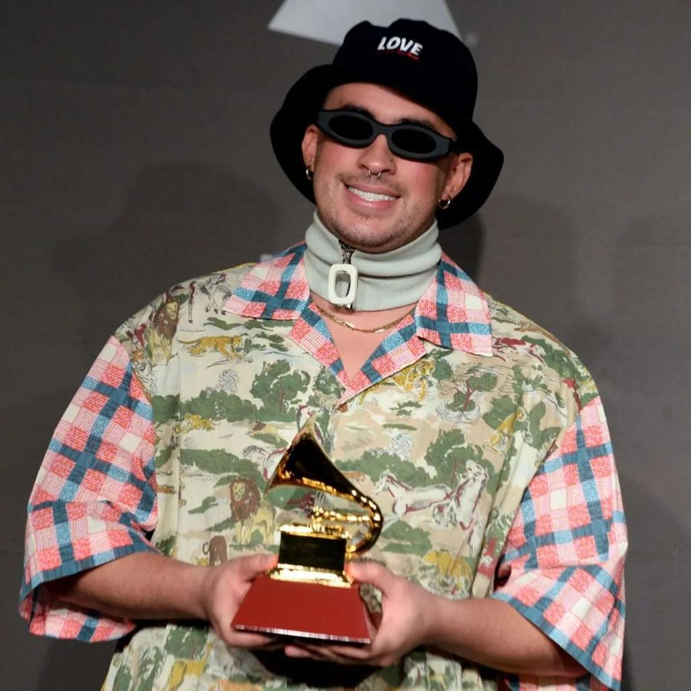
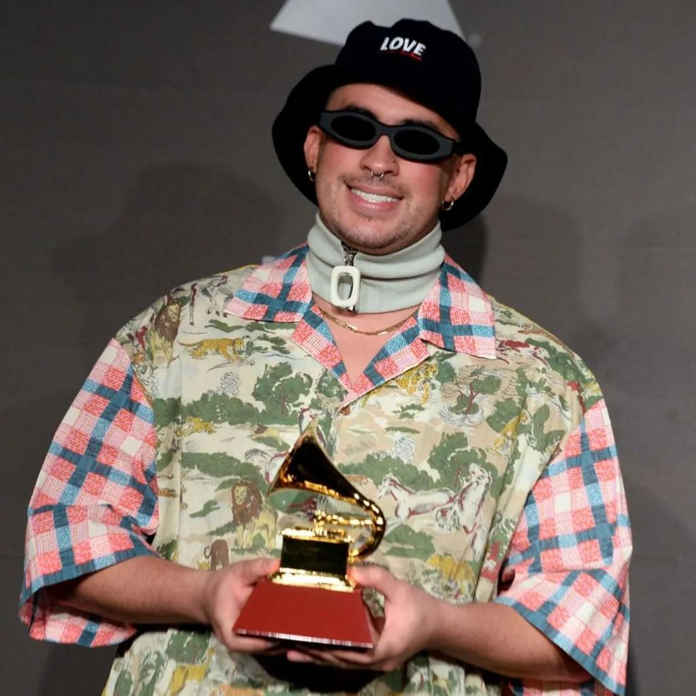
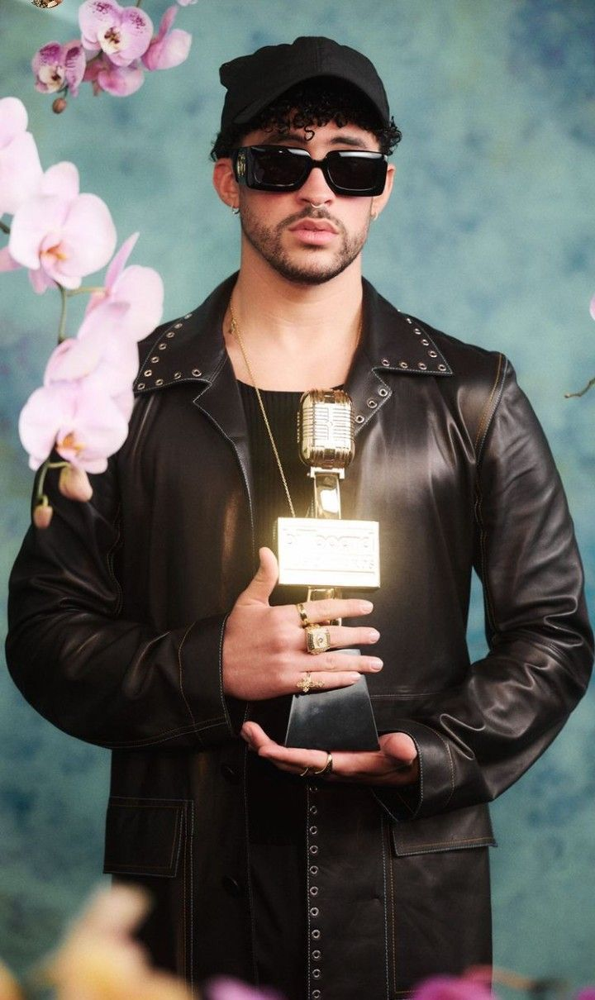
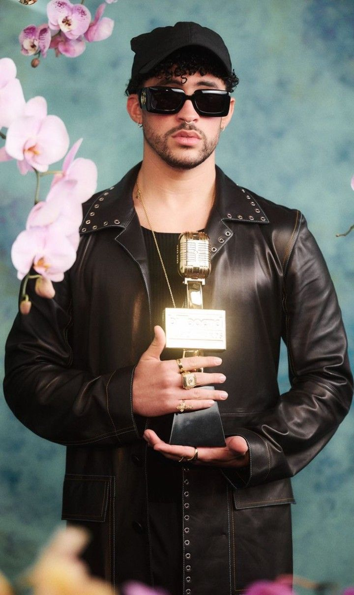
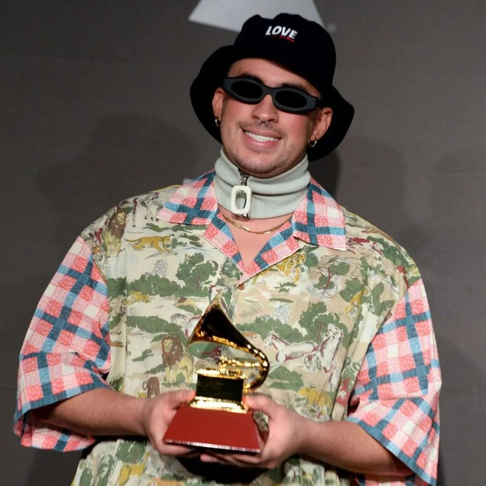
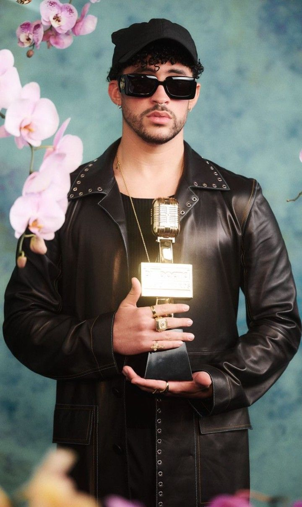

 

Benito Antonio Martínez Ocasio (Almirante Sur, Vega Baja, 10 de marzo de 1994), conocido artísticamente como Bad Bunny, es un rapero, cantante y compositor puertorriqueño.Su estilo de música es generalmente definido como trap latino y reguetón, pero también ha interpretado otros géneros como rock, kizomba y soul. Se caracteriza por su entonación grave y rasposa y su estilo de vestir.
Empezó a ganar popularidad en SoundCloud y eventualmente firm� un contrato con un sello discográfico mientras trabajaba como empaquetador en un supermercado y estudiaba en la Universidad de Puerto Rico en Arecibo. Después del éxito de su sencillo "Soy Peor" en 2016, alcanzó la fama tras colaborar con los artistas Cardi B y Drake en los sencillos "I Like It" y "Mia" que alcanzaron el primer y tercer puesto en la lista Billboard Hot 100 respectivamente. Su álbum de estudio debut X 100pre (2018) ganó el Grammy Latino por Mejor álbum de Música Urbana y entró en la lista de los 500 mejores álbumes musicales de todos los tiempos, según la revista Rolling Stone, ocupando el lugar 447 Su álbum colaborativo con el cantante colombiano J Balvin, Oasis (2019), contiene los exitosos sencillos "Qué Pretendes" y "La Canción". Así como produjo el exitoso sencillo "Callaíta" con el productor Tainy después de la publicación de su álbum x100pre. A principios del 2020, canté en el Espectáculo de medio tiempo del Super Bowl LIV junto a Shakira, y se convirtió en el primer artista latino urbano en ser la portada de la revista Rolling Stone. Durante el año, Bad Bunny lanzó su segundo álbum YHLQMDLG (Yo hago lo que me de la gana), un álbum sorpresa recopilatorio Las que no iban a salir, y su tercer álbum de estudio El último tour del mundo, que se convirtió en el primer álbum completo en español en alcanzar la cima de la lista Billboard 200, y que contuvo el sencillo "Dakiti" que fue número uno en la lista Billboard Global 200. Además, fue el primer artista latino en ser el más reproducido en Spotify durante el año (2020)
amorfoda como una de sus canciones mas famosas. genero:urbano latina, fecha:2018, reprduciones:976 millones en youtube
su ulltimo album se llama un verano sin ti ,contiene 23 canciones fue lanzado el 6 de mayo de 2022
su primer sencillo "soy peor" fue lanzado en 2016 y alcanzo las 106 millones de repoducciones

